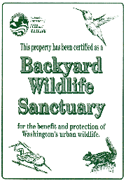

A Department of Fish and Wildlife program
to help you help wildlife around your home.
A bald eagle soars over a high bluff surveying the waters below.
Red-tailed hawks with outstretched wings drift effortlessly over forests and open fields.
Hummingbirds zip by your window on their way to the family garden. The morning
dew highlights fragile spider webs at the forest edge. This is Washington
State - a great place to live.

A land we all love, yet one we may be smothering with our numbers. Over
35,000 acres of wildlife habitat is lost each year here in Washington,
a large majority due to housing and development. If we continue at this rate
our wildlife will have few places to live and visit. So the Washington Department
of Fish and Wildlife instituted the Backyard Wildlife
Sanctuary Program to help offset some of this habitat loss. While
many of us may not realize it, a property owner is also a habitat manager.
The things we do, or do not do, in the vicinity of our home have an effect
on the quality of habitat for dozens of wildlife species.
The Department of Fish and Wildlife wants to help you understand and appreciate
the wildlife around your home. You can make your property a better place
for songbirds and other wildlife species that have lived in your area long
before people began to settle.
Ordering the Backyard Wildlife Sanctuary Packet
Write to the Department of Fish and Wildlife and order the Backyard Wildlife
Sanctuary Packet. It contains information that will help you become a wildlife habitat manager on your own property. You will also have the opportunity to register your yard as an official backyard wildlife sanctuary. The address to write is:
(Remember to include your address with the request)
Westside (West of Cascades Ridge)(Herron Island)
Washington Department of Fish and
Wildlife
Backyard Wildlife Sanctuary Program
16018 Mill Creek Blvd.
Mill Creek, WA 98012
Please include a $5.00 check payable to WDFW for printing and postage. Good
environmental stewardship begins in our own backyards.
The Backyard Sanctuary Packet contains:
-
A pamphlet on Landscaping for Wildlife which tells you how to develop a plan,
how to best locate your plants, how to arrange them, what height plants you
should consider and finally, how to implement your landscape plan.
-
A list of plants to attract birds specific to your area. Learn about the
sun, soil, and water requirements and attractive features of each plant to
help you decide which are best for your landscape.
-
How to best feed birds, including information on the right kinds of seeds
and feeders.
-
The kinds of birds most commonly found in your backyard at different times
of the year, along with natural history information for each bird.
-
Tips for attracting hummingbirds. Including a list of the best plants and
the use of feeders.
-
Tips for attracting butterflies, including a list of the best plants and
flowering times.
-
How to design and make bird houses for wrens, chickadees, and other
cavity-nesting birds.
-
A list of references for more information on feeding, housing, landscaping,
and other activities devoted to your backyard sanctuary.
-
An application form to enroll your yard as an official backyard sanctuary.
When you enroll you will receive an outdoor sign (example shown above), and
a signed certificate.
Want to make your property
better for wildlife?
Consider these suggestions:
-
Plant more trees and shrubs. Remember, vegetation is the key to attracting
a variety of wildlife. Dead trees (snags) are especially valuable to wildlife;
try to keep them on your property if they pose no safety hazard.
-
Add a birdbath or other source of water. A safe place to bathe and drink
will act as a magnet to many animals.
-
Add bird feeders. A feeder for millet, one for sunflower seeds, and one for
suet will appeal to a wide variety of birds.
-
Add bird houses, or better yet, try to leave snags on your property.
Cavity-nesting birds have been especially hurt by urban development. A bird
house of the proper dimensions can substitute for snags where these birds
used to nest.
-
Cover any openings under the eaves or other places around your house where
house sparrows and starlings may nest. These non-native birds are undesirable
competitors for food and nesting cavities and many native birds have suffered
because of their presence. Bird houses and feeders should be designed and
managed to reduce use by sparrows and starlings.
-
Control cats that may be prowling around your sanctuary; they can be especially
harmful to birds that feed or nest on the ground. Try putting a small bell
around your cat's neck.
-
Get your neighbors interested in backyard wildlife. Several adjacent yards
with good wildlife resources are even more effective. Most wildlife species
need areas larger than a single lot can provide. Remember, every homeowner
is a habitat manager, and the collective actions of conscientious homeowners
will benefit the wildlife that shares your living space.
© 1997-99 Washington Department of Fish and Wildlife, used with permission.
"This is a reproduction of a Washington Department of Fish and Wildlife document and is not the official document or regulations of the Washington Department of Fish and Wildlife. The accuracy of the reproduction cannot be guaranteed by WDFW."
Home Page
| Beachcomber
| Boosters
| Calendar
| Ferry Rates
| Ferry Schedule
HMC Board
| Island History
| Links
| Maps
| Members Only
| Memorials
Merchants
| Photos
| Tides
| Wildlife